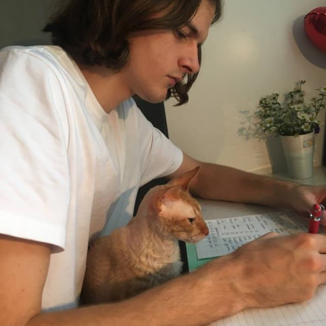

|  |
Pavel Zherdzetsky
Hi, my name is Pavel, I am a 20 year old student of Minsk State Linguistic University with a big interest in photography, cinematography, literature and adventures.
|
Employment History
- Working with customers' requests using HubSpot as a ticket tracking tool and Teams as a means of communication;
- Answering customers’ questions via Live Chats, E-mails and calls;
- Fixing issues in our custom products and other supported solutions.
Trusted IT Group |
Jul 2020 - Feb 2021 (8 mos)
Tools used: HubSpot, MS Teams, MS Outlook
- Supporting customers by processing numerous requests, answering questions and troubleshooting issues using ZenDesk as a ticket tracking tool and Fuze and Zoom as a means of troubleshooting;
- Working with Live Chat to process emergency questions and issues;
- Reporting problems and incidents to the engineers using Atlassian Jira providing all the necessary details of the issue;
- Working with the development team, escalating issues’ priority, testing fixes and working with customers to ensure fix deployments and high customer satisfaction levels;
- Supporting customers in all aspects through to problem resolution, keeping the customers informed and updated throughout the life of the problems and incidents.
SolbegSoft |
May 2021 - Dec 2021 (8 mos)
Tools used: ZenDesk, Slack, MS Teams, MS Outlook, Atlassian Jira, Atlassian Confluence, Zoom, Fuze, OpenVPN, MS Excel
|
|
Itransition |
Dec 2021 - Present (3 mos)
Contact Information
E-mail: pavelzherdzetsky@gmail.com
Phone: +375 (29) 271-75-21
LinkedIn: Pavel Zherdzetsky
Soft Skills
- Problem-solving mind
- Fast learner
- Team player
- Stress-resistant
- E-mail communication
- Live calls
- Live chat communication
Tools
- HubSpot
- ZenDesk
- Zoom
- Fuze
- Atlassian Jira
- Atlassian Confluence
- MS 365
Languages
- Russian - Native
- English - C1
- Polish - B1
- Dutch - A2